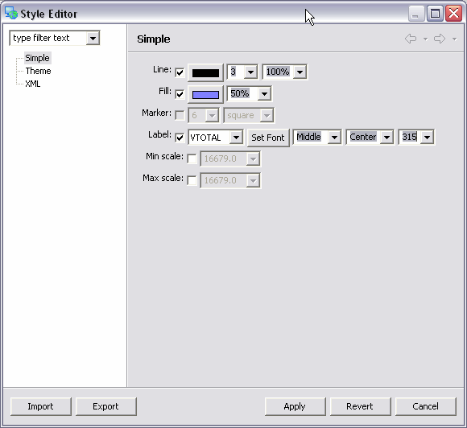
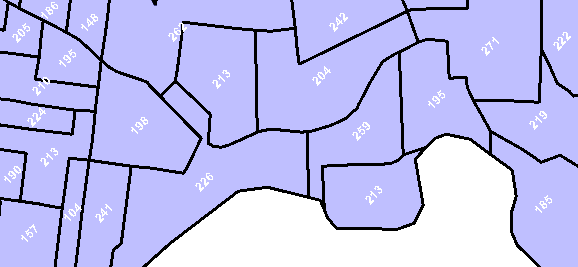
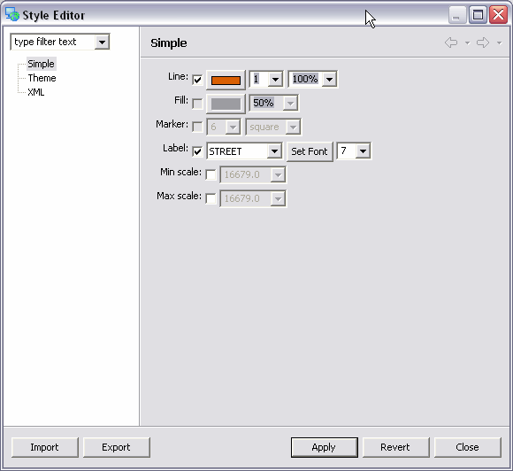
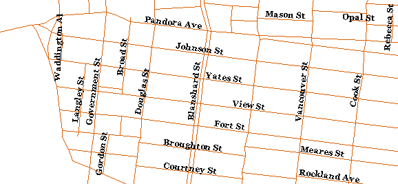
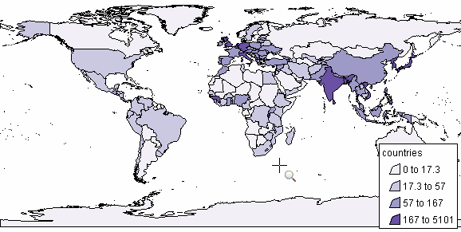

Stil eines Kartenlayers ändern
Den Stil eines Kartenlayers ändern
Das Aussehen eines Layers können Sie mittels des Stilfensters ihren Vorstellungen anpassen. Sie haben dabei mehrere Möglichkeiten:
- Klicken Sie mit der rechten Maustaste auf einen Layer im Layerfenster und wählen Sie Stil ändern oder
- Klicken Sie auf die Schaltfläche:
 oder
oder
- Wählen Sie im Menü Kartenlayer > Stil ändern ...
Einfach
Diese Seite erlaubt es, allen Features des Layers ein gleiches Aussehen zu verleihen.zu den Eigenschaften des Aussehens gehören die Farbe die Füllfarbe, der Punktstil und der Textstil. Auch der Maßstab kann berücksichtigt werden. So können bestimmte Features bei bestimmten Maßstäben ausgeblendet werden.

das obige Beispiel zeigt die Einstellungen, die genutzt wurden, um untenstehende Karte zu erzeugen. Der Polygonlayer zeigt Waldgebiete wobei der Text die Anzahl der Wahlstimmen repräsentiert. Die Texte sind dabei um 315 Grad gedreht.

Textsymbole für Linien haben etwas andere Ausrichtungseigenschaften:

Der rechtwinklige Versatz, im Beispiel auf 7 gesetzt, legt fest wie groß der Abstand zwischen Linie und Text ist.

Thematisch
Mit dieser Seite können den Kartenlayern thematische Stile zugewiesen werden. So kann beispielsweise die Farbe in Abhängigkeit von Attributen gesetzt werden, um so die Aussage der Karte zu verbessern.

Das obige Beispiel zeigt die Einstellungen, die nötig sind, um die Einwohnerdichte zu veranschaulichen, wie in der untenstehenden Abbildung gezeigt:
- Attribut: Welches Attribut des Themas bestimmt die Färbung?
- Klassen: Wieviele verschiedene Farben soll verwendet werden?
- Intervallgrenze: Wie sollen die verschiedenen Werte in die einzelnen Klassen eingeordnet werden?
- Quantile: Jede Klasse erhält die gleiche Anzahl Features.
- Gleich: Jede Klasse besitzt die gleiche Breite.
- Verschiedene Werte: Jeder Wert definiert eine eigene Klasse, soweit das möglich ist.
- Normalisieren: Für numerische Werte ist dies das Attribut für die Normalisierung.ist das Kriterium beispielsweise "Bevölkerung" und das Normalisierungsattribut "Quadratkilometer", so ergibt sich als Ergebnis die Bevölkerungsdichte.
- Sonst: Wie soll mit Nullwerten oder unendlichen Werten umgegangen werden? Sollen sie ausgeblendet werden, eine eigene Klasse erhalten oder in die erste oder letzte Klasse einsortiert werden?
Einstellungen für die Eignung:
- Zeigen: Setzt den allgemeinen Filter in die Paletten
- Alle: Es wird kein Filter gesetzt.
- Numerisch: Es werden nur für numerische Werte geeignete Paletten gezeigt.
- Sequenziell: Es werden Paletten mit Übergängen von einer zu einer anderen Farbe gezeigt. Verwenden Sie diese Paletten beispielsweise für Höhendaten oder Ist-Werte.
- Divergierend: Bei diesen Paletten ist die mittlere Farbe neutral, um Abweichungen nach oben oder unten besser zu verdeutlichen. Verwenden Sie dies Paletten für Trends.
- Kategorien: Dies sind Paletten für nicht-numerische Daten oder numerische Daten mit ganz spezifischen Vorgabewerten. Diese Paletten weisen nebeneinanderliegenden Kategorien kontrastierende Farben zu.
- die Schaltflächen zeigen die Eignung für Farbe blinde Menschen für CRT-Monitore, für Projektoren, für LCD Monitoren, für Farbausdrucke oder Schwarz-weiß-Kopien.

Mittels SLD
Wenn die stilistischen Mittel der vorangegangenen Seiten nicht ausreichen, haben Sie die Möglichkeit auf dieser Seite mittels SLD, dem sogenannten "Styled Layer Descriptor" komplexe Stile zu definieren. Die SLD Spezifikationen beschreibt das dabei zu verwendende XML-Format. Sie finden diese unter http://www.opengeospatial.org/docs/02-070.pdf.
Das Stilfenster
alternativ zum Spieldialog können Sie auch das Stilfenster verwenden:
- Wählen Sie Menü: Fenster > Fensteanzeige > Stil
- Wählen Sie den gewünschten Kartenlayer im Layerfenster aus
- Bearbeiten Sie die Stileigenschaften

- Klicken Sie auf die Schaltfläche "Anwenden":

(c) Copyright (c) 2004-2008 Refractions Research Inc. and others.